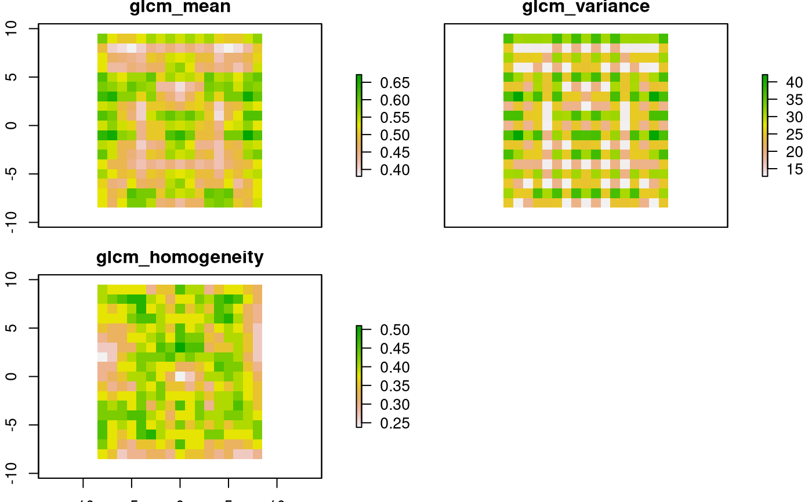

Calls the glcm package with useful settings
glcm_texture( x, nrasters = 1:raster::nlayers(x), kernelSize = c(3), stats = c("mean", "variance", "homogeneity", "contrast", "dissimilarity", "entropy", "second_moment", "correlation"), shift = list(c(0, 1), c(1, 1), c(1, 0), c(1, -1)), parallel = TRUE, n_grey = 8, min_x = NULL, max_x = NULL )
| x | rasterLayer or a rasterStack containing different channels |
|---|---|
| nrasters | vector of channels to use from x. Default =nlayers(x) |
| kernelSize | vector of numbers indicating the environment sizes for which the textures are calculated |
| stats | string vector of parameters to be calculated. |
| shift | =list(c(0,1), c(1,1), c(1,0),c(1,-1)) |
| parallel | logical value indicating whether parameters are calculated parallel or not |
| n_grey | number of grey values. |
| min_x | for each channel the minimum value which can occur. If NULL then the minimum value from the rasterLayer is used. |
| max_x | for each channel the maximum value which can occur. If NULL then the maximum value from the rasterLayer is used. This functions calls the glcm function from with standard settings and returns list of RasterStacks containing the texture parameters for each combination of channel and kernelSize |
for the use of glcm_texture a glcm wrapper function a raster* object is required
More information at:
texture tutorial
Keep in mind that:
Homogeneity is correlated with Contrast, r = -0.80
Homogeneity is correlated with Dissimilarity, r = -0.95
GLCM Variance is correlated with Contrast, r= 0.89
GLCM Variance is correlated with Dissimilarity, r= 0.91
GLCM Variance is correlated with Homogeneity, r= -0.83
Entropy is correlated with ASM, r= -0.87
GLCM Mean and Correlation are more independent. For the same image, GLCM Mean shows r< 0.1 with any of the other texture measures demonstrated in this tutorial. GLCM Correlation shows r<0.5 with any other measure.
for a review of a lot of feature extraction algorithms look at: Williams et al, 2012, J. of Electronic Imaging, 21(2), 023016 (2012)
glcm <-> haralick "mean" <-> "advanced 1", "variance" <-> "advanced 2", "homogeneity" <-> "simple 4", "contrast"<-> "simple 5", "dissimilarity" <-> "advanced 2", "entropy" <-> "simple 2", "second_moment"<-> "simple 4", "correlation" <-> "simple 3"
Furthermore using stats will cover mean and variance while dissimilarity is highly correlated to homogeneity data.
require(glcm)#>## example on how to calculate texture with glcm owd <- getwd() setwd(tempdir()) data("pacman") # call glcm wrapper result <- glcm_texture(pacman, nrasters=1:3, stats=c("mean", "variance", "homogeneity"), parallel = FALSE) #plot the result: raster::plot(result[[1]])setwd(owd)